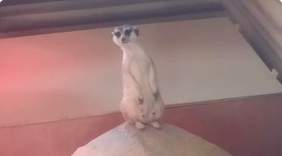

Сьогодні 31 серпня 2022 року Нікопольський пологовий
будинок отримав медичне обладнання на загальну варість 291.950 грн...
Показані статті:
16
из
65

Медичне обладнання для нікопольського
пологового будинку (291.950 грн.)

Продукти харчування для переселенців у м. львів (44.500
грн.)
На цьому тижні Фондом було закуплено та передано продукти харчування на
загальну
суму 44.500 грн. для внутрішньо ...
Гуманітарна допомога для
внутрішніх переселенців у м. запоріжжя (47.000 грн.)
Минулого тижня до школи-інтернату «Орієнтир» (м. Запоріжжя), на базі якого
проживають ВПО, була передана ...
Вітаємо з днем незалежності україни
Команда МБФ «Центр соціальних проектів майбутнього» вітає з найголовнішим
Святом
країни — Днем Незалежності...

Планшети для військової частини (14.073 грн.)
Фондом було закуплено та передано 2 планшети для військової частини
Чернігівщини
на загальну суму 14.073 грн.

Конвектори для переселенців, м. тернопіль (14.300 грн.)
Фондом було передано 4 конвектори загальною вартістю 14.300 грн. для ВПО, що
проживають на базі Тернопільського...

Допомога для військової частини запорізької області (17.294 грн.)
Для військової частини Запорізької області були передани інструменти на
загальну
суму 17.294 грн...
Меблі для дітей у рамках допомоги для впо (39.339 грн.)
Сьогодні БФ «Місто Добра», що опікується внутрішніми переселенцями у Чернівцях
отримали меблі для дітей на загальну суму...

Допомога харківському зоопарку (213.000 грн.)
У цьому місяці для тварин у Харківському зоопарку було передано 1620 кг м’яса.
Наразі у зоопарку знаходиться 1962 осіб...
Допомога впо у луцьку (50.000 грн.)
Сьогодні 17 серпня 2022 року внутрішні переселенці, які проживають на базі
Луцького коледжу отримали гуманітарну...
Побутова техніка для внутрішніх переселенців, м. ужгород (17.717 грн.)
Минулого тижні внутрішньо переселені особи, які проживають школи №6 у м.Ужгород,
отримали побутову техніку...
Морозильна камера для впо у запоріжжі (16.559 грн.)
На минулому тижні соціальний гуртожиток, де проживають внутрішні переселенці, на
базі Січового колегіуму...
Допомога для прихистку «мама і маля» (15.000 грн.)
Сьогодні 12 липня 2022 року Фондом були оплачені пелети (паливні гранули) на суму
15.000 грн. для прихистку «Мама і маля»...
Продукти харчування для впо у нижанковичах (16.001 грн.)
Сьогодні 9 серпня 2022 року внутрішньо переміщені особи, що проживають у
соціальному гуртожитку у Нижанковичах...
Допомога для гуртожитку на базі школи у львові (15.000 грн.)
Сьогодні 10 серпня 2022 року Фондом було передано допомогу у вигляді господарчих
товарів та чистячих засобів для ВПО...

Монітори пацієнта для інституту раку (160.000 грн.)
Сьогодні 11 серпня 2022 року Національний Інститут раку отримав два монітори
пацієнта на суму 160.000 грн...